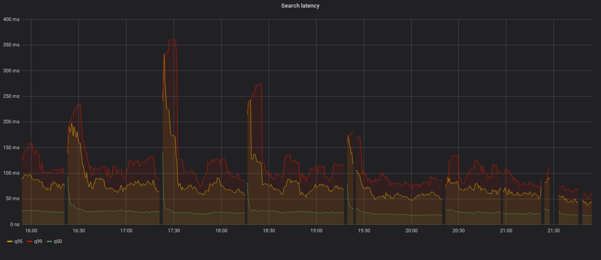
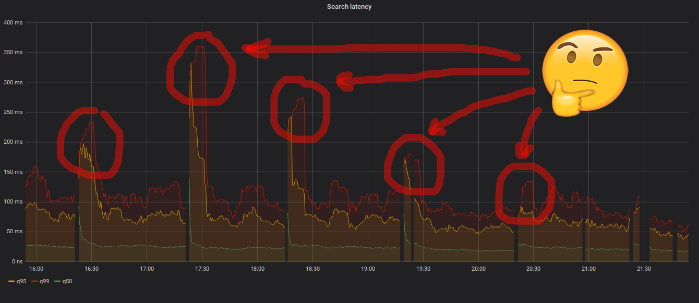
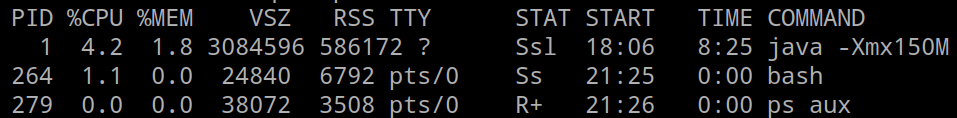
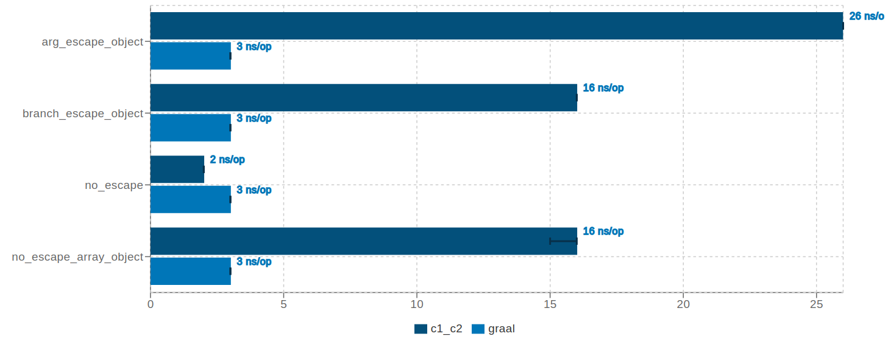
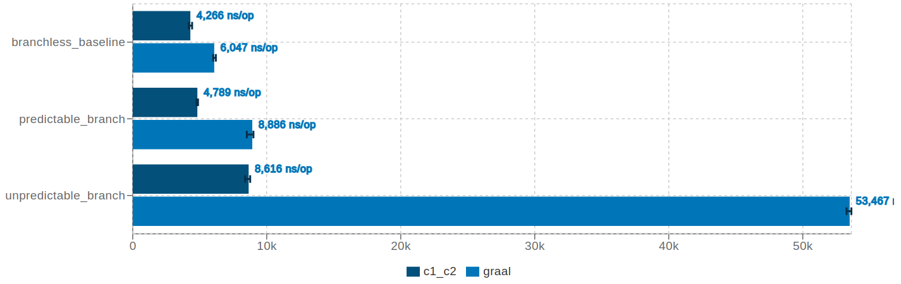

Scala & GraalVM
как мы внедряли и немного приуныли
Grebennikov Roman / findify.io / @public_void_grv / grv@dfdx.me / Deep Refactoring / Voronezh / 2020
Про Findify
- white-label eCommerce SaaS search
- 1500 магазинов, 20M товаров
- 50M посетителей в месяц
Immutable index
Latency
Latency
Latency
- Холодный старт JVM
- в ожидании JIT надо делать прогрев
- все равно тормозит
RSS size
-
-Xmx150m

- Но RSS почему-то ~580Mb
- А куда делись еще ~400 Mb?
-XX:NativeMemoryTracking
Native Memory Tracking:
Total: reserved=762739KB, committed=434835KB
- Java Heap (reserved=153600KB, committed=153600KB)
(mmap: reserved=153600KB, committed=153600KB)
- Class (reserved=226935KB, committed=118775KB)
(classes #17076)
( instance classes #16186, array classes #890)
(malloc=3703KB #47002)
(mmap: reserved=223232KB, committed=115072KB)
( Metadata: )
( reserved=100352KB, committed=98560KB)
( used=96016KB)
( free=2544KB)
( waste=0KB =0.00%)
( Class space:)
( reserved=122880KB, committed=16512KB)
( used=14146KB)
( free=2366KB)
( waste=0KB =0.00%)
- Thread (reserved=28858KB, committed=9326KB)
(thread #83)
(stack: reserved=28464KB, committed=8932KB)
(malloc=297KB #424)
(arena=97KB #164)
- Code (reserved=251300KB, committed=51088KB)
(malloc=3612KB #18833)
(mmap: reserved=247688KB, committed=47476KB)
- GC (reserved=42649KB, committed=42649KB)
(malloc=4157KB #27063)
(mmap: reserved=38492KB, committed=38492KB)
- Compiler (reserved=11054KB, committed=11054KB)
(malloc=557KB #2108)
(arena=10497KB #13)
- Symbol (reserved=23759KB, committed=23759KB)
(malloc=21130KB #212087)
(arena=2629KB #1)
Простая математика
- 400Mb
- 1000 магазинов
- 3 реплики

Что делать
- GC tuning
- jvm11 AOT, AppCDS
- точная копия трафика для прогрева
GraalVM
GraalVM
Оптимизирующий компилятор с изюминкой:
- Замена HotSpot C1/C2
- Умеет в AOT: native-image
- Truffle: интерпретаторы python/js/ruby
Native-image
- Closed-world AOT
- статическая инициализация всего
- нет class/meta space, code/compiler cache
AOT компиляция
if (almostNeverHappens()) {
Foo.exec()
} else {
Bar.exec()
}
- JIT: профиль выполнения, загружен только Bar
- AOT: статический анализ, загружены Bar и Foo
сборка почти всей scala-library и java rt.jar
столкновение с реальностью
Detailed message:
Error: com.oracle.graal.pointsto.constraints.UnsupportedFeatureException:
Invoke with MethodHandle argument could not be reduced to at most a single call:
java.lang.invoke.MethodHandle.bindTo(Object)
Trace:
at parsing java.lang.invoke.MethodHandleImpl.makePairwiseConvertByEditor(MethodHandleImpl.java:221)
Call path from entry point to
java.lang.invoke.MethodHandleImpl.makePairwiseConvertByEditor(MethodHandle, MethodType, boolean, boolean):
no path found from entry point to target method
MethodHandle
- динамическое связывание
- похоже на вызов метода через reflection
- все проверки - в момент создания MH
scala 2.13 слишком свежа
У вас akka
akka, попытка 1
Exception in thread "main" com.typesafe.config.ConfigException$Missing:
No configuration setting found for key 'akka'
at com.typesafe.config.impl.SimpleConfig.findKeyOrNull(SimpleConfig.java:156)
at com.typesafe.config.impl.SimpleConfig.findKey(SimpleConfig.java:149)
at com.typesafe.config.impl.SimpleConfig.findOrNull(SimpleConfig.java:176)
at com.typesafe.config.impl.SimpleConfig.find(SimpleConfig.java:188)
at com.typesafe.config.impl.SimpleConfig.find(SimpleConfig.java:193)
at com.typesafe.config.impl.SimpleConfig.getString(SimpleConfig.java:250)
at akka.actor.ActorSystem$Settings.<init>(ActorSystem.scala:329)
at akka.actor.ActorSystemImpl.<init>(ActorSystem.scala:703)
at akka.actor.ActorSystem$.apply(ActorSystem.scala:258)
at akka.actor.ActorSystem$.apply(ActorSystem.scala:302)
at akka.actor.ActorSystem$.apply(ActorSystem.scala:246)
at com.example.Akka$.main(Akka.scala:12)
at com.example.Akka.main(Akka.scala)
Ресурсы
By default, the native-image builder will not integrate any of the resources which are on the classpath during image building into the image it creates.
-H:IncludeResources=.*
Akka, попытка 2
Exception in thread "main" java.lang.ClassNotFoundException: akka.event.DefaultLoggingFilter
at com.oracle.svm.core.hub.ClassForNameSupport.forName(ClassForNameSupport.java:60)
at java.lang.Class.forName(DynamicHub.java:1174)
at akka.actor.ReflectiveDynamicAccess.$anonfun$getClassFor$1(ReflectiveDynamicAccess.scala:22)
at scala.util.Try$.apply(Try.scala:213)
at akka.actor.ReflectiveDynamicAccess.getClassFor(ReflectiveDynamicAccess.scala:21)
at akka.actor.ReflectiveDynamicAccess.createInstanceFor(ReflectiveDynamicAccess.scala:40)
at akka.actor.ActorSystemImpl.<init>(ActorSystem.scala:807)
at akka.actor.ActorSystem$.apply(ActorSystem.scala:258)
at akka.actor.ActorSystem$.apply(ActorSystem.scala:302)
at akka.actor.ActorSystem$.apply(ActorSystem.scala:246)
at com.example.Akka$.main(Akka.scala:12)
at com.example.Akka.main(Akka.scala)
Reflection
- Class.forName(clazz: String)
- необходима таблица соответствий
className -> Class[_] - -H:ReflectionConfigurationFiles=...
[
{
"name": "akka.actor.Actor",
"allDeclaredConstructors": true,
"allPublicConstructors": true
},
{
"name": "akka.actor.ActorCell",
"fields": [
{
"name": "props",
"allowWrite": true
}
]
},
{
"name": "akka.actor.ActorLogging",
"allDeclaredConstructors": true,
"allPublicConstructors": true
},
...
Reflection
- Можно руками (64 класса для akka 2.5.25)
- Гитхаб: github.com/vmencik/akka-graal-native
- Reflection tracing agent
Reflection tracing agent?
- агент для аудита reflection, JNI и ресурсов
- при выходе пишет конфиг для native-image
java -agentlib:native-image-agent=config-output-dir=conf -jar app.jar
Akka, попытка 3
[com.example.akka:6885] classlist: 8,802.32 ms
[com.example.akka:6885] (cap): 1,655.73 ms
[com.example.akka:6885] setup: 2,116.11 ms
Warning: RecomputeFieldValue.FieldOffset automatic substitution failed.
The automatic substitution registration was attempted because a call to
sun.misc.Unsafe.objectFieldOffset(Field) was detected in the static
initializer of akka.actor.LightArrayRevolverScheduler$.
Detailed failure reason(s): The field akka.actor.LightArrayRevolverScheduler$.akka$actor$LightArrayRevolverScheduler$$taskOffset,
where the value produced by the field offset computation is stored, is not static.
[com.example.akka:6885] analysis: 21,683.98 ms
Error: Error encountered while parsing akka.actor.LightArrayRevolverScheduler$TaskHolder.extractTask(java.lang.Runnable)
Parsing context:
parsing akka.actor.LightArrayRevolverScheduler$TaskHolder.cancel(LightArrayRevolverScheduler.scala:345)
parsing akka.actor.LightArrayRevolverScheduler.akka$actor$LightArrayRevolverScheduler$$schedule(LightArrayRevolverScheduler.scala:178)
parsing akka.actor.LightArrayRevolverScheduler.scheduleOnce(LightArrayRevolverScheduler.scala:139)
parsing akka.dispatch.MessageDispatcher.akka$dispatch$MessageDispatcher$$scheduleShutdownAction(AbstractDispatcher.scala:182)
parsing akka.dispatch.MessageDispatcher$$anon$3.run(AbstractDispatcher.scala:233)
... Unsafe
- Unsafe работает
- Object layout не совпадает с HotSpot
- Unsafe.objectFieldOffset вернет оффсет не туда
- и ...
Segmentation fault (core dumped)
import com.oracle.svm.core.annotate._
class Danger {
def doCrazyShit = {
// тут стрельба в ногу
}
}
@TargetClass(className = "com.example.Danger")
class DangerPatch {
@Substitute
def doCrazyShit = {
// более человечная реализация
}
}
Akka, попытка 4
[com.example.akka:9499] classlist: 8,071.53 ms
[com.example.akka:9499] (cap): 1,510.22 ms
[com.example.akka:9499] setup: 2,392.74 ms
[com.example.akka:9499] analysis: 41,560.60 ms
Error: Class initialization of akka.protobuf.DescriptorProtos failed.
Use the option --initialize-at-run-time=akka.protobuf.DescriptorProtos
to explicitly request delayed initialization of this class.
build/run-time init
// извините за джаву
public class StaticFoo {
static int value = 0
static {
// init logic
// on class load
value = 42
}
}
- run-time init: исполнить при загрузке класса
- build-time init: исполнить при компиляции, сохранить стейт
- --initialize-at-run-time=akka.protobuf.DescriptorProtos
Akka, попытка 5
Exception in thread "main" java.security.NoSuchAlgorithmException:
Error constructing implementation
(algorithm: SunX509, provider: SunJSSE, class: sun.security.ssl.KeyManagerFactoryImpl$SunX509)
at java.security.Provider$Service.newInstance(Provider.java:1621)
at sun.security.jca.GetInstance.getInstance(GetInstance.java:236)
at sun.security.jca.GetInstance.getInstance(GetInstance.java:164)
at javax.net.ssl.KeyManagerFactory.getInstance(KeyManagerFactory.java:137)
at com.typesafe.sslconfig.ssl.DefaultKeyManagerFactoryWrapper.<init>(SSLContextBuilder.scala:76)
at com.typesafe.sslconfig.akka.AkkaSSLConfig.buildKeyManagerFactory(AkkaSSLConfig.scala:103)
at com.typesafe.sslconfig.akka.AkkaSSLConfig.<init>(AkkaSSLConfig.scala:78)
at com.typesafe.sslconfig.akka.AkkaSSLConfig$.createExtension(AkkaSSLConfig.scala:29)
at com.typesafe.sslconfig.akka.AkkaSSLConfig$.createExtension(AkkaSSLConfig.scala:19)
...
SSL/TLS
JCA Security Services on Substrate VM [1]:
By default a native image is built with support for the SecureRandom and MessageDigest engines from the SUN provider. These are core security services needed by the VM itself. All the other Java security services (Signature, Cipher, Mac, KeyPair, KeyGenerator, KeyFactory, KeyStore, etc.) must be enabled adding the --enable-all-security-services option to the native-image command.
The reason behind enabling only core security services by default is that you can start with a basic image and add more security services as you need them. This helps keeping the overall image size small.
[1]: https://github.com/oracle/graal/blob/master/substratevm/JCA-SECURITY-SERVICES.md
Akka, попытка 6
[com.example.akka:9499] classlist: 8,112.29 ms
[com.example.akka:9499] (cap): 1,485.50 ms
[com.example.akka:9499] setup: 1,931.82 ms
[com.example.akka:9499] (typeflow): 28,675.37 ms
[com.example.akka:9499] (objects): 27,308.50 ms
[com.example.akka:9499] (features): 2,637.91 ms
[com.example.akka:9499] analysis: 60,902.60 ms
[com.example.akka:9499] (clinit): 2,559.93 ms
[com.example.akka:9499] universe: 4,033.60 ms
[com.example.akka:9499] (parse): 6,369.08 ms
[com.example.akka:9499] (inline): 8,557.53 ms
[com.example.akka:9499] (compile): 39,604.12 ms
[com.example.akka:9499] compile: 56,653.69 ms
[com.example.akka:9499] image: 23,930.95 ms
[com.example.akka:9499] write: 809.89 ms
[com.example.akka:9499] [total]: 156,548.71 ms

demo: http server
performance: latency
ab -n 10000 -c 4 http://localhost:8080/
| Percentile | JVM cold | JVM hot | Native image |
| 50% | 6ms | 1ms | 1ms |
| 80% | 10ms | 1ms | 2ms |
| 90% | 16ms | 1ms | 2ms |
| 95% | 21ms | 2ms | 2ms |
| 98% | 28ms | 2ms | 3ms |
| 99% | 34ms | 8ms | 5ms |
performance
JVM JIT Compilers Benchmarks Report 19.11 [1]
- C2 JIT vs Graal JIT, OpenJDK 13
- 24 микробенчмарка
- C2 побеждает в 65%
[1]: https://ionutbalosin.com/2019/11/jvm-jit-compilers-benchmarks-report-19-11/
performance: escape analysis
performance: if condition
выводы
- и правда работает;
- не серебряная пуля;
- надо уметь готовить;
- легко прострелить ногу.
¯\_(ツ)_/¯
Ссылки
Вопросы?
| F с дыркой | 100 | 200 | 300 | 400 | 500 |
| Холивар | 100 | 200 | 300 | 400 | 500 |
| Code of Conduct | 100 | 200 | 300 | 400 | 500 |
| Карго культ | 100 | 200 | 300 | 400 | 500 |
| Олег | 100 | 200 | 300 | 400 | 500 |
| Хаскелл | 100 | 200 | 300 | 400 | 500 |
| a slide by @nikitonsky | |||||